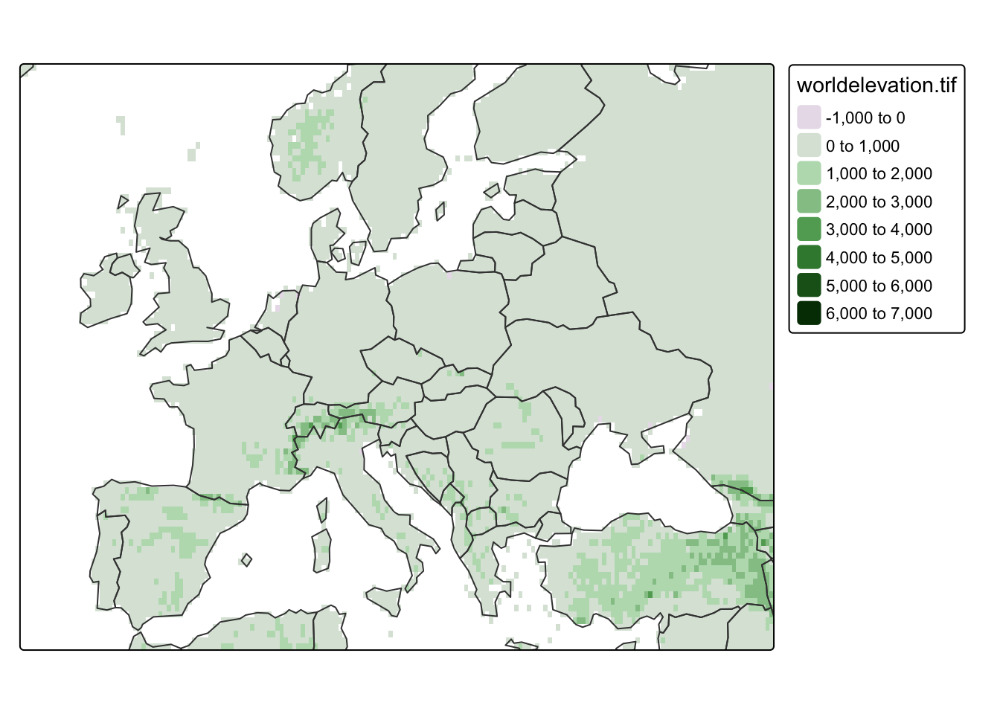
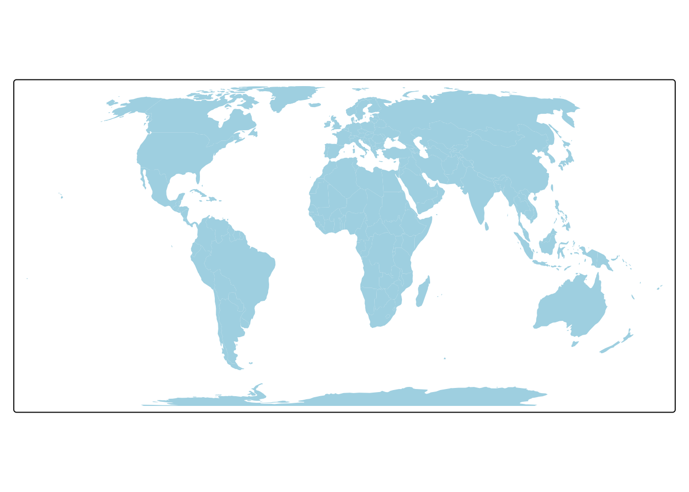

install.packages("sf")
install.packages("stars")
install.packages("tmap")In this lab, we’ll explore the basics of map-making in R using the tmap package.
1. Why tmap?
- There are MANY ways to make maps in R, but
tmapor “thematic maps” offers the most flexibility. tmapcan handle vector and raster objects from thesf,sp,raster, andstarspackages.- The syntax of
tmapis based onggplot2and the Grammar of Graphics tmapsupports static AND interactive maps (yay!)
2. Set Up
- Fork and clone this repository to create a version controlled project for Week 1.
- Create a Quarto doc
- Install and load all necessary packages
library(sf) # for vector data (more soon!)
library(stars) # for raster data (more soon!)
library(tmap) # for static and interactive maps
library(here)3. Specifying spatial data
Similar to plotting in ggplot2, in order to plot spatial data, at least two aspects need to be specified:
- the spatial data object to plot (e.g.
ggplot(data = )) - and the plotting method (e.g.
geom_points())
Let’s load three spatial data objects to plot:
- a raster (more on this next week!) of elevations of the world
- a vector dataset (again, more soon!) of country boundaries
- a vector dataset of locations of major cities
# raster of global elevations
world_elevation <- read_stars(here("data","worldelevation.tif"))
# country boundaries
world_vector <- read_sf(here("data","worldvector.gpkg"))
# major cities
world_cities <- read_sf(here("data","worldcities.gpkg"))Shapes and layers
In tmap, the spatial object to plot needs to be defined within the function tm_shape(). This is analogous to defining the data frame to plot in ggplot2 (ggplot(data = )).
Let’s start by plotting the countries of the world.
# plotting a single spatial object
tm_shape(world_vector) + # defines the spatial object to plot
tm_polygons() # defines how to plot the object
Shapes hierarchy
Similar to ggplot2, we can plot multiple datasets by adding layers. When multiple spatial objects are being plotted, each has to be defined in a separate tm_shape() call.
Now let’s plot the following two spatial objects:
- countries of the world
- major cities of the world
In the next section we’ll unpack the difference between tm_polygons() and tm_dots(), but for now let’s just pay attention to the syntax of how we plot multiple spatial objects. Each spatial object needs to be specified using tm_shape() followed by a function for how to plot it.
# plotting two spatial objects
tm_shape(world_vector) + # defines the FIRST spatial object to plot
tm_polygons() + # defines how to plot the FIRST object
tm_shape(world_cities) + # defines the SECOND objet to plot
tm_dots() # defines how to plot the SECOND object
So far, we’ve only tried plotting vector data (more on what this means next week!), but one of the major advantages of tmap is that it allows us to plot vector and raster on the same map.
Let’s try on example of this by adding information on global elevations to our previous map.
# plotting vector and raster spatial objects
tm_shape(world_elevation) + # plot global elevations
tm_raster() + # tm_raster for raster data
tm_shape(world_vector) +
tm_borders() +
tm_shape(world_cities) +
tm_dots() +
tm_text("name")Variable(s) "NA" contains positive and negative values, so midpoint is set to 0. Set midpoint = NA to show the full spectrum of the color palette.Similar to ggplot2 the order of the “layers” matters! The order in which datasets are plotted defines how they are layered (think of this is as adding layers of paint). Spatial objects have extra features which additionally change this behavior: spatial extent and projection. When creating maps with tmap, whichever dataset is used in the first tm_shape() call sets the spatial extent and projection (more details next week!) for the entire map.
For example, if we swapped the order of tm_shape() calls in the previous example, we’d end up with a different map.
tm_shape(world_cities) + # plot world_cities first
tm_dots() +
tm_text("name") +
tm_shape(world_elevation) +
tm_raster() +
tm_shape(world_vector) +
tm_borders() Variable(s) "NA" contains positive and negative values, so midpoint is set to 0. Set midpoint = NA to show the full spectrum of the color palette.Sometimes this can present sticky issues! Imagine the case where we want to use the spatial extent and projection from the world_cities data, but want it plotted on top of the other datasets. We can do this by changing the main shape using the is.master argument.
tm_shape(world_elevation) +
tm_raster() +
tm_shape(world_vector) +
tm_borders() +
tm_shape(world_cities, is.master = TRUE) + # plot world_cities last, but set as main shape
tm_dots() +
tm_text("name")Variable(s) "NA" contains positive and negative values, so midpoint is set to 0. Set midpoint = NA to show the full spectrum of the color palette.Map extent
One thing to consider when making maps is what area we want to show on the map – the spatial extent of our map. This isn’t an issue when we want to map all of our data (spatial extent of our data matches our desired map extent). But often our data will represent a larger region than what we want to map.
We have two options:
- process our data to create a new spatial object for exactly what we want to map (fine, but annoying)
- change the extent of a map
tmap has a few options for changing the map extent. The first is by defining a bounding box that specifies the minimum and maximum coordinates in the x and y directions that we want to represent. The values need to be in the units of the original data or we can create a bounding box using st_bbox().
For example, let’s restrict our previous map to just Europe using a set of min/max values.
tm_shape(world_elevation, bbox = c(-15, 35, 45, 65)) + # add bounding box to restrict extent
tm_raster() +
tm_shape(world_vector) +
tm_borders() Variable(s) "NA" contains positive and negative values, so midpoint is set to 0. Set midpoint = NA to show the full spectrum of the color palette.We can also restrict the extent of the map using the extent of a dataset. For example, we can restrict the map using the extent of the world_cities data.
tm_shape(world_elevation, bbox = world_cities) + # bounding box = extent of world_cities
tm_raster() +
tm_shape(world_vector) +
tm_borders() Variable(s) "NA" contains positive and negative values, so midpoint is set to 0. Set midpoint = NA to show the full spectrum of the color palette.
Bonus Tip
You can also restrict the map extent using an OpenStreetMap tool called Nominatim to automatically generate minimum and maximum coordinates in the x and y directions based on the provided query.
tm_shape(world_elevation, bbox = "Europe") + # query the region of Europe
tm_raster(palette = terrain.colors(8))
Layers
Again following the syntax of ggplot2 which uses layers to plot data (e.g. geom_point()), tmap also uses layers! We’ve already used layers in our previous examples (e.g. tm_borders()), but now we’ll dig into them in more detail. All possible layer types can be found in the table below:
| Function | Element | Geometry |
|---|---|---|
| Basic functions | ||
| tm_polygons() | polygons (borders and fill) | polygons |
| tm_symbols() | symbols | points, polygons, and lines |
| tm_lines() | lines | lines |
| tm_raster() | raster | raster |
| tm_text() | text | points, polygons, and lines |
| tm_basemap() | tile | |
| tm_tiles() | tile | |
| Derived functions | ||
| tm_borders() | polygons (borders) | polygons |
| tm_fill() | polygons (fill) | polygons |
| tm_bubbles() | bubbles | points, polygons, and lines |
| tm_dots() | dots | points, polygons, and lines |
| tm_markers() | marker symbols | points, polygons, and lines |
| tm_square() | squares | points, polygons, and lines |
| tm_iso() | lines with text labels | lines |
| tm_rgb()/tm_rgba() | raster (RGB image) | raster |
Let’s practice by using a dataset that contains a polygon representing the perimeter of Easter Island.
ei_borders <- read_sf(here("data", "easter_island", "ei_border.gpkg"))Polygons
The main function to visualize polygons is tm_polygons(). By default, it plots the internal area of the polygon in light grey and the polygon borders in slightly darker grey.
tm_shape(world_vector) +
tm_polygons()
We modify the colors useing the col and border.col arguments and other arguments borrowed from ggplot2.
tm_shape(world_vector) +
tm_polygons(col = "lightblue",
border.col = "black",
lwd = 0.5,
lty = "dashed")
But, you may have noticed in the previous table that tm_polygons isn’t the only function we can use to plot polygon data. In fact, tm_polygons is a combination of two separate functions - tm_fill() and tm_borders().
The tm_borders() function plots just the borders and the tm_fill() function fills polygons with a fixed color or a color palette representing a selected variable.
# plot just borders
tm_shape(world_vector) +
tm_borders(col = "red")
# fill polygons with fixed color
tm_shape(world_vector) +
tm_fill(col = "lightblue")
# fill polygons with a color palette representing a variable
tm_shape(world_vector) +
tm_fill("CO2_emissions")
Syntax differences
Note that to change the border color in tm_polygons() we used the border.col argument, but in tm_borders() we used the col argument. This is necessary in tm_polygons() to differentiate between the settings for the polyons fill and borders.